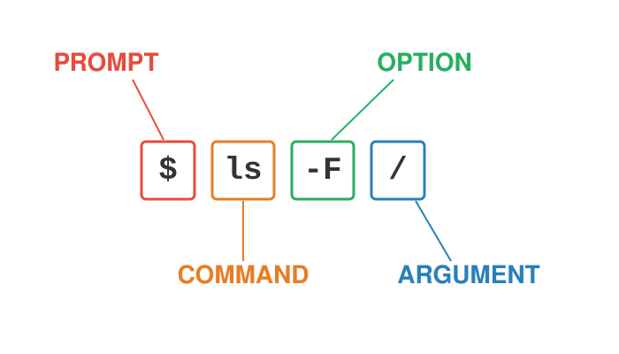

flowchart LR
A[".md / .qmd<br/>plain-text source"] --> B["Quarto<br/>(runs code, calls Pandoc)"]
B --> C["HTML page"]
B --> D["PDF<br/>(via LaTeX)"]
B --> E["Word .docx"]
B --> F["Slides"]
Lecture 00 - Computational Tools Bootcamp
Getting Started: UO Computing, the Shell, Your Toolkit, and Markdown
Bill Cresko
2026-09-24
Welcome to the Bootcamp
This is a practical morning - we will learn by doing
- By 1:00pm every one of you should have a working computational toolkit on your own laptop
- You should know where UO keeps your files and software
- You should be able to move around your computer from the command line
- And you should be able to write and render a Markdown document
Class Introductions
Who are you?
- Your name
- Your home lab or rotation lab
- What kind of computer are you using today (Mac, Windows, Linux)?
- What has your experience with programming been like?
Plan for the morning
| Time | Block |
|---|---|
| 9:00 - 9:50 | Part 1 - The UO computing ecosystem |
| 9:50 - 10:00 | Break |
| 10:00 - 10:50 | Part 2 - Your computer, the shell, and paths |
| 10:50 - 11:00 | Break |
| 11:00 - 11:50 | Part 3 - Installing your toolkit |
| 11:50 - 12:00 | Break |
| 12:00 - 1:00 | Part 4 - Markdown and rendering |
Where the bootcamp fits
Today is a first pass. Almost everything we touch will come back in more depth:
| Today’s topic | Revisited in |
|---|---|
| Computers, operating systems, storage | Lecture 01 - 02 |
| The shell and paths | Lecture 02 - 03 |
| Files, pipes, streams, large data | Lecture 03 - 05 |
| Scripting | Lecture 06 (shell), Lecture 07 (R) |
| IDEs (VS Code, Positron, RStudio) | Lecture 06 - 07 |
| Markdown, Quarto, LaTeX | Lecture 08 |
| Git, GitHub, GitHub Pages | Lecture 08 - 09 |
| Talapas (UO’s supercomputer) | Lecture 10 |
Why computational literacy matters
- Modern bioengineering generates data at scale: imaging, sequencing, simulations, sensors, device logs
- The lab generates the data; the computer turns it into results
- Every analytical decision - filtering, normalizing, plotting, testing - is a line of code
- Reproducibility requires that every step is recorded, versioned, and re-runnable
Tip
You do not need to become a software engineer. You need to know your tools well enough to use them confidently and understand what they are doing.
The computational stack for this course
- Hardware - your laptop now; UO’s HPC cluster Talapas later in the term
- Operating system - macOS, Linux, or Windows (with WSL) - all speaking the same Unix shell
- Command line - navigate, move data, run scripts, chain tools together
- Languages - R and Python for analysis
- IDEs - VS Code and Positron to write and run code
- Markdown / Quarto / LaTeX - prose + code + math + figures in one reproducible document
- Institutional services - Microsoft 365, Dropbox, site-licensed software
Part 1 - The UO Computing Ecosystem
Your UO digital identity
- Duck ID - your UO username and password; it is the key to almost everything today
- Manage it at https://duckid.uoregon.edu
- Two-step login (Duo) - required for most UO services; set it up on your phone before you need it
- UO email (
you@uoregon.edu) - also your sign-in name for Microsoft 365 and Dropbox - UO VPN (Cisco Secure Client) - only needed off-campus for campus-restricted resources (some library databases, departmental file shares, some licensed software)
- Download from https://uovpn.uoregon.edu
Note
Most UO services - email, Canvas, Microsoft 365, Teams, Zoom - work from anywhere without the VPN.
Where to get help at UO
- UO Service Portal - https://service.uoregon.edu - knowledge base articles and help tickets for everything on the next few slides
- Technology Service Desk - phone 541-346-4357 or live chat
- Research Advanced Computing Services (RACS) - Talapas and research computing
- Center for Biomedical Data Science (CBDS) - Knight Campus data science support and training
- UO Libraries - Research Data Management - data management plans, storage, and sharing
Tip
When something doesn’t work, search the Service Portal knowledge base first - most questions already have an article.
The Microsoft 365 stack
UO students and employees all have a Microsoft 365 A5 license:
| Tool | What it’s for |
|---|---|
| Outlook | UO email and calendar (100 GB mailbox) |
| Word, Excel, PowerPoint, OneNote | Desktop, web, and mobile apps - install on your own devices |
| Teams | Chat, meetings, and shared files for groups and labs |
| OneDrive | Your personal cloud storage (1 TB) |
| SharePoint / Teams files | Shared storage owned by a group, not one person |
| Copilot Chat | UO-protected generative AI assistant (sign in with UO account) |
Note
Sign in at https://office.uoregon.edu with your UO email address. Install the Office desktop apps from there.
OneDrive - your personal cloud storage
- Available at no cost to all UO students and employees - 1 TB each
- Sync app on Mac and Windows puts a
OneDrivefolder on your computer - files you save there are backed up automatically - Share files and folders with UO colleagues and outside collaborators
- Approved for FERPA and HIPAA data
- Individual files can be up to 250 GB
Warning
OneDrive belongs to you. Data that belongs to a lab should live in shared storage (SharePoint/Teams, a lab Dropbox team folder, or Talapas project space) so it doesn’t leave when you do.
UO Dropbox
- UO has an institutional Dropbox contract (renewed through March 2028)
- Who has access: faculty, staff, officers of administration, and graduate employees (GEs)
- Students who are not UO employees lost access in March 2026 - use OneDrive instead
- Your lab may also share a Dropbox team folder with you
- 2 TB of individual storage; team storage is purchased by departments/labs
- Sign in with your UO email; install the desktop app so files sync to a local folder
- Upload files up to 50 GB on the web, larger via the desktop app
Warning
Dropbox is approved for green and amber data (including FERPA) but not for HIPAA or red (high-risk) data.
A note on synced folders and paths
Both Dropbox and OneDrive create a real folder on your computer - which means it has a path you can use from the command line:
- Names like
University of Oregon Dropboxcontain spaces - we’ll see why that matters in Part 2 - Your exact path may differ - we’ll find yours together with
pwdandls - Synced folders are great for documents; large or rapidly-changing analysis files are better on Talapas or local disk
Data classification - what can go where?
UO classifies data by risk. Know the class of your data before you choose where to put it.
| Class | Examples | OK in |
|---|---|---|
| Green (low) | Published data, your code, most de-identified research data | Almost anywhere, including AI tools |
| Amber (medium) | FERPA student records, unpublished research data | OneDrive, Dropbox, Teams/SharePoint |
| Red (high) | HIPAA / protected health information, SSNs, credit cards | Only approved systems (e.g., OneDrive for HIPAA) - ask first! |
Important
Only green data may be entered into AI tools that are not officially supported by UO. Microsoft Copilot Chat signed in with your UO account is approved for more.
Choosing where to store your work
| Storage | Best for | Revisited |
|---|---|---|
| Your laptop’s disk | Active work - fast, but not backed up by itself | Lec 01 |
| OneDrive | Personal documents, drafts, backups | - |
| Dropbox (if eligible) | Lab-shared folders, collaboration | - |
| Teams / SharePoint | Group-owned documents | - |
| GitHub | Code and small text files, with full version history | Lec 08-09 |
| Talapas | Large datasets and heavy computation | Lec 10 |
Tip
Rule of thumb: code → GitHub, documents → OneDrive/Dropbox, big data → Talapas. And always keep your raw data somewhere backed up and untouched.
Site-licensed software
UO pays for a number of software licenses you can install for free:
- UO Software Downloads - https://software.uoregon.edu (log in with Duck ID)
- MATLAB, Mathematica, LabVIEW, SPSS / SPSS Amos, ESRI ArcGIS, and more
- Some titles need a license code or a UO network/VPN connection to activate
- Microsoft 365 apps - install from https://office.uoregon.edu
- Adobe - students get Adobe Express on personal devices; full Creative Cloud is available in campus computer labs
- UO-managed computers (not your personal laptop) use the Software Center app to install approved software
Note
Check the Software Downloads site for the current list and eligibility - availability can differ for students and employees.
Free and open-source tools - the core of this course
Almost everything we use this term is free, open-source, and cross-platform:
| Tool | What it does | Where to get it |
|---|---|---|
| Unix shell (bash/zsh) | Command-line control of your computer | Built in (Mac/Linux) or WSL (Windows) |
| R | Statistics and data analysis | https://cran.r-project.org |
| Python | General-purpose programming | https://www.python.org |
| VS Code | Code editor / IDE | https://code.visualstudio.com |
| Positron | Data-science IDE for R and Python | https://positron.posit.co |
| Quarto | Renders Markdown + code documents | https://quarto.org |
| LaTeX (TinyTeX) | Math typesetting and PDF output | via Quarto (Part 3) |
| Git / GitHub | Version control and collaboration | Lectures 08 - 09 |
Research computing at UO - a preview
- Talapas - UO’s high-performance computing (HPC) cluster: thousands of CPU cores, GPUs, and very large storage
- Accounts are tied to a PIRG (a PI’s research group) - ask your PI, or CBDS for course access
- You log in over SSH from the same shell we will use today
- Documentation: https://uoracs.github.io/talapas2-knowledge-base/
Tip
Everything you learn in the shell today works unchanged on Talapas - same commands, much bigger machine. Full details in Lecture 10.
BREAK - back at 10:00
Part 2 - Your Computer, the Shell, and Paths
The three parts of a computer that matter most
- CPU - does the processing
- Made of cores (independent workers) running at some clock speed (GHz)
- More cores = more tasks at once (if the software is written to use them)
- RAM - fast, volatile working memory. Your data must fit here while you analyze it. Lost when power is off.
- Disk - slower, persistent storage (SSD or hard drive). Where your files live.
Tip
The most common bottleneck for data analysis is RAM. “Out of memory” usually means get more RAM or move to the cluster, not “get a faster CPU.” More on this in Lecture 01.
What an operating system does
- The OS is the manager between you and the hardware
- Runs many programs (processes) at once, sharing the CPU cores
- Hands out memory and keeps programs from clobbering each other
- Organizes storage into a file system of files and directories
- Enforces security - users, groups, and permissions
Note
macOS and Linux are both Unix-like. Windows is not - which is why Windows users will install a Linux environment (Ubuntu via WSL) in a few minutes.
What is a shell?
- The shell is a program that takes typed commands and hands them to the operating system
bashandzshare the most common shells (macOS useszshby default; Ubuntu usesbash)- You access the shell through a terminal window
- Why bother when there’s a GUI?
- Scriptable - record every step and re-run it with one command
- Composable - chain small tools into powerful pipelines
- Scalable - handles huge files and thousands of files at once
- Universal - the same commands work on your laptop and on Talapas
Getting a shell - macOS and Linux
You already have one!
- macOS: open Applications → Utilities → Terminal (or press
Cmd-Spaceand type “Terminal”) - Linux: open your Terminal application (often
Ctrl-Alt-T) - Optional: install a nicer terminal such as iTerm2 (macOS)
Tip
On macOS, the first time you use some developer tools you may be asked to install the Xcode Command Line Tools. Say yes - we’ll need them.
Getting a shell - Windows (WSL + Ubuntu)
Windows users install the Windows Subsystem for Linux (WSL 2), which runs a real Ubuntu Linux alongside Windows:
- Right-click Windows PowerShell → Run as administrator
- Type:
- Restart your computer when asked
- Open Ubuntu from the Start menu; wait while it finishes installing
- Create a Linux username and password (they do not need to match your Windows login - but remember them!)
Note
wsl --install installs Ubuntu by default. Requires Windows 11 or an up-to-date Windows 10.
Windows - after Ubuntu is installed
- Your Linux home is
/home/yourname- work here for speed - Your Windows drive is visible from Ubuntu at
/mnt/c/- e.g.
/mnt/c/Users/yourname/Documents
- e.g.
- From Windows File Explorer, Ubuntu files appear under Linux in the sidebar
- Tip: install Windows Terminal from the Microsoft Store for a nicer terminal with tabs
The file system is a tree

- Files live in a tree of directories (folders) starting at the root,
/ - Your home directory (
~) is your own branch of the tree
Paths - addresses in the tree
- A path is the address of a file or directory
- Absolute path - starts at the root
/, works from anywhere/Users/wcresko/projects/bootcamp/data/samples.csv(macOS)/home/wcresko/projects/bootcamp/data/samples.csv(Linux / WSL)
- Relative path - starts from where you are right now
data/samples.csv../scripts/analysis.R
- Shortcuts:
.= the current directory..= one level up (the parent)~= your home directory
Anatomy of a shell command

- Prompt - the shell is ready (often ends in
$or%) - Command - what to do
- Options/flags - change how it does it (e.g.
-l) - Arguments - what to do it to (e.g. a file or directory)
Where am I? What’s here?
pwd # print working directory - the absolute path you're in
ls # list files & folders in the current directory
ls -F # mark directories with /, executables with *
ls -l # long format: permissions, owner, size, date
ls -la # long format + hidden "dot" files (.zshrc, .config ...)
ls -lh # human-readable file sizes (K, M, G)Tip
Getting help: man ls opens the manual page for ls (press q to quit). Many commands also accept --help.
Moving around with cd
cd ~ # go home (~ is always your home directory)
cd # same thing - cd with no argument goes home
cd / # go to the root of the file system
cd ~/Documents # absolute path (via ~) - works from anywhere
cd Documents # relative path - only works if Documents is here
cd .. # up one level
cd ../.. # up two levels
cd - # back to where you just were
pwd # confirm where you landedTip
Press Tab to auto-complete file and directory names. Press it twice to see all the options. This saves typing and typos.
Spaces in names are trouble
- The shell uses spaces to separate arguments
- So names with spaces must be quoted or escaped
- Tab completion adds the escapes for you
- Best solution: don’t put spaces in your own file and folder names
Making and managing files and directories
Warning
rm has no Trash. rm -r is permanent and recursive - always double-check the path first.
Looking inside files
Warning
Never cat a huge file - a 3 GB sequence file will flood your terminal. Use head, tail, or less.
Paths practice
You are in /home/you/bootcamp/data. The layout is:
- Go to
scripts/with an absolute path:cd /home/you/bootcamp/scripts - Go to
scripts/with a relative path:cd ../scripts - From
scripts/, list the data folder without moving:ls ../data - From anywhere, go home:
cd ~
Note
Relative paths are portable - move the whole project and they still work. Absolute paths are unambiguous but break if anything above them moves.
Exercise - build a project directory
- Use
touchto makedata/raw/samples.csvandscripts/01_explore.R - Use
pwdin three different directories and write down the absolute paths - From
output/figures, use a relative path to listdata/raw - Find the path to your OneDrive (or Dropbox) folder and
cdinto it
Organizing a project
data/raw/is read-only - always read from it, never write to itoutput/is expendable - it can be regenerated fromscripts/+data/raw/- Use relative paths inside your scripts so the project is portable
Naming conventions that save headaches
- No spaces - use
_or-(cell_counts.csv, notcell counts.csv) - No special characters - avoid
& ? * / \ : ( ) ' " - Be consistent with case - Unix treats
Data.csvanddata.csvas different files - Dates as
YYYY-MM-DDso they sort correctly:2026-09-24_plate_reader.csv - Number scripts to show their order:
01_clean.R,02_analyze.R,03_plot.R - Descriptive, not “final”:
figure2_v3_final_FINAL.pngis a cry for help (and for Git - Lecture 08)
A command-line reference card
| Task | Command |
|---|---|
| Where am I? | pwd |
| What’s here? | ls -lF |
| Go somewhere | cd path |
| Go home / up | cd ~ / cd .. |
| Make a directory | mkdir name |
| Make empty file | touch name |
| Copy | cp src dst |
| Move / rename | mv src dst |
| Delete file | rm file |
| Peek at a file | head / tail / less |
| Count lines | wc -l file |
| Get help | man command |
Note
Much more in Lectures 02 - 05: pipes, redirection, wildcards, grep, and working with large files.
BREAK - back at 11:00
Part 3 - Installing Your Toolkit
The installation checklist
| # | Tool | Why we need it | Check it works |
|---|---|---|---|
| 1 | A shell | Command line (Part 2) | echo $SHELL |
| 2 | R | Statistics and data analysis | R --version |
| 3 | Python | General-purpose programming | python3 --version |
| 4 | Quarto | Render Markdown + code documents | quarto --version |
| 5 | LaTeX (TinyTeX) | Math and PDF output | quarto check |
| 6 | VS Code | General-purpose code editor | open it |
| 7 | Positron | Data-science IDE for R and Python | open it |
Tip
Install in this order. Work with your neighbors - if you finish early, help someone else!
Installing R
- Go to CRAN: https://cran.r-project.org
- Choose your operating system:
- macOS - download the
.pkgthat matches your chip (Apple silicon / arm64 for M1-M4 Macs, Intel / x86_64 for older Macs) - Windows - “base” → download and run the installer
- Linux / Ubuntu - follow the Ubuntu instructions on CRAN (uses
apt)
- macOS - download the
- Accept the defaults
Note
Windows users: install the Windows version of R (for Positron/VS Code). You can also install R inside Ubuntu later with sudo apt install r-base, but it isn’t needed today.
Installing Python
- macOS - download the installer from https://www.python.org/downloads/ and run it
- (The
python3that ships with macOS is a stub tied to Xcode tools - use the python.org version)
- (The
- Windows - download from https://www.python.org/downloads/
- Check the box “Add python.exe to PATH” on the first installer screen!
- Ubuntu / WSL - Python 3 is already installed; add the extras:
Tip
On Talapas and for bigger projects we will manage Python with environments (e.g. conda or uv) so that each project gets its own packages. More on this later in the term.
Installing Quarto
- Quarto turns Markdown + code into HTML pages, PDFs, Word documents, and slides - including these slides!
- Download the installer from https://quarto.org/docs/get-started/
- Run it and accept the defaults
Note
Positron and RStudio include a copy of Quarto, but installing it yourself means it also works from the terminal and in VS Code.
Installing LaTeX
- LaTeX is a typesetting system - the standard for mathematical notation, and what Quarto uses to make PDFs
- Full LaTeX distributions (MacTeX, MiKTeX, TeX Live) are several GB
- TinyTeX is a small LaTeX distribution that installs extra pieces only when needed - and Quarto installs it for you:
Tip
If you already have MacTeX, MiKTeX, or TeX Live, you can skip this - Quarto will find it.
What is an IDE?
- An Integrated Development Environment bundles an editor, a terminal, a console, and tools like version control in one window
- Plain text editors (
nano,vim) are fine for quick edits but don’t scale to real projects - A good IDE:
- shows your whole project at once
- color-codes your code (syntax highlighting) and catches mistakes early
- lets you run code right where you write it
- You’ll spend hours in your IDE - a small upfront investment pays back every day
Installing VS Code
- Download from https://code.visualstudio.com/download - free, no account needed
- Run the installer for your operating system
- Open VS Code; allow any permissions it asks for
- Windows users: when prompted, install the WSL extension so VS Code can work inside Ubuntu
- From an Ubuntu terminal,
code .opens the current directory in VS Code
- From an Ubuntu terminal,
Tip
On macOS, open the Command Palette (Cmd-Shift-P) and run “Shell Command: Install ‘code’ command in PATH” so you can type code . in your terminal.
The VS Code layout
- Activity Bar (far left) - switch between Explorer, Search, Source Control, Extensions
- Explorer - the file tree for your open folder
- Editor - open multiple files in tabs; split with
Cmd/Ctrl-\ - Integrated terminal - a full shell at the bottom; toggle with
Ctrl-` - Command Palette -
Cmd/Ctrl-Shift-P- find any command by typing
Tip
Always use File → Open Folder on your whole project, not a single file. VS Code (and Positron) work best when they can see the entire project. The terminal opens in that folder automatically.
VS Code extensions for this course
Open the Extensions panel (Cmd/Ctrl-Shift-X), search, and click Install:
- Quarto - edit and render
.qmddocuments - Python (Microsoft) - Python language support
- R (REditorSupport) - R language support
- Jupyter - notebooks and interactive Python
- WSL (Windows users) - work inside Ubuntu
- Later in the term: Remote - SSH for Talapas (Lecture 10)
Note
You can add or remove extensions any time. Start with this short list.
Keyboard shortcuts worth memorizing
| Action | macOS | Windows / Linux |
|---|---|---|
| Command Palette | Cmd-Shift-P |
Ctrl-Shift-P |
| Toggle terminal | Ctrl-` |
Ctrl-` |
| Toggle comment | Cmd-/ |
Ctrl-/ |
| Indent / un-indent | Cmd-] / Cmd-[ |
Ctrl-] / Ctrl-[ |
| Find in file | Cmd-F |
Ctrl-F |
| Search whole project | Cmd-Shift-F |
Ctrl-Shift-F |
| Save | Cmd-S |
Ctrl-S |
Tip
The backtick (`) is usually on the key above Tab - not the apostrophe. These same shortcuts work in Positron.
Installing Positron
- Positron is a free, next-generation data-science IDE from Posit (the makers of RStudio)
- Download from https://positron.posit.co/download
- Install R and Python first - Positron finds them automatically and lets you switch between them
- Open Positron and use File → Open Folder on your
bootcampproject - Start an R or Python console from the interpreter picker at the top right
Note
If you’ve used RStudio before - it’s still a great R IDE, and we’ll see it in Lecture 07. Positron brings the RStudio-style data-science panes to a VS Code-style editor, for both R and Python.
The Positron layout
- Everything from VS Code: Explorer, editor tabs, terminal, Command Palette
- Plus data-science panes:
- Console - an interactive R or Python session
- Variables - every object you’ve created
- Plots - your figures, with history
- Data Explorer - a spreadsheet-style view of data frames
- Help - documentation for functions
Tip
Write code in the editor (so it’s saved in a file) and send lines to the console with Cmd/Ctrl-Enter. Use the console only for quick experiments.
VS Code vs. Positron
The same
- Positron is built on Code OSS, the open-source core of VS Code
- Same editor, Command Palette, terminal, keyboard shortcuts, and settings
- Both are free and run on macOS, Windows, and Linux
- Both support extensions and render Quarto
- Both can connect to remote machines over SSH
Different
- Positron is built for data science: R and Python are built in, with a Console, Variables, Plots, and Data Explorer panes
- VS Code is general-purpose: any language via extensions; the most extensions and the biggest community
- Positron’s extensions come from Open VSX, not Microsoft’s marketplace - a few Microsoft-only extensions aren’t available (Positron has its own equivalents)
- The VS Code R extension is not used in Positron - R support is native
Which should I use?
| If you mostly… | Try |
|---|---|
| Analyze data interactively in R or Python | Positron |
| Write shell scripts, edit config files, work in many languages | VS Code |
| Work on remote servers like Talapas | Either |
| Already love RStudio for pure R work | RStudio is fine too! |
Tip
You don’t have to choose forever. They share a lot of muscle memory - learn one and you mostly know the other. This term we will use both.
Checkpoint - does everything work?
Open a terminal (in VS Code or Positron) and run:
- Every command should print a version (or a list of checks) - not “command not found”
- “command not found” usually means the program isn’t on your PATH - the list of directories the shell searches for programs
- Try closing and re-opening the terminal (or restarting the IDE) after installing
- Still stuck? Raise your hand - we’ll fix it together
BREAK - back at 12:00
Part 4 - Markdown and Rendering
What is Markdown?
- A lightweight markup language - plain text with a few simple symbols for formatting
- Created to be easy to read as plain text and easy to convert to HTML
- Used everywhere: GitHub READMEs, Jupyter and Quarto notebooks, Slack, lab wikis, websites, these slides
- Plain text means it is future-proof, small, and works perfectly with Git
Note
You write the plain-text source. A program then renders it into a formatted document.
Markdown basics
You type
You get
- Headers of different sizes
- Text that is italic, bold, or
code - Bulleted and numbered lists
- Clickable links
- Images
Tables and code blocks in Markdown
| Sample | Treatment | Cells |
|---|---|---|
| S1 | control | 5200 |
| S2 | drug | 4800 |
Tip
Three back-ticks start and end a code block. Add a language name for syntax highlighting.
Rendering - from source to document
- Rendering converts your source into a finished document
- One source → many output formats
- PDF output goes through LaTeX - that’s why we installed TinyTeX
Exercise - your first Markdown document
- In VS Code or Positron, open your
bootcampfolder - Create
docs/hello.mdand type:
- Preview it: in VS Code,
Cmd/Ctrl-Shift-Vopens the Markdown preview - Render it from the terminal:
What is Quarto Markdown (.qmd)?
- A
.qmdfile is Markdown plus:- a YAML header at the top that controls document settings
- code chunks in R, Python, bash, and more that run when you render
- The output - tables, figures, numbers - is woven into the document
- This is literate programming: the document is the analysis
Anatomy of a .qmd file
- YAML header between the
---lines - Markdown prose
- Code chunks marked with
```{r}or```{python}
Exercise - render a Quarto document
- Create
docs/first.qmdwith the content from the previous slide - Render it to HTML:
- Or click Preview / Render in VS Code or Positron (
Cmd/Ctrl-Shift-K) - Now make a PDF (this uses LaTeX!):
Note
The R chunk needs R and the Python chunk needs Python. If the Python chunk fails, python3 -m pip install jupyter usually fixes it - Quarto uses Jupyter to run Python.
A taste of LaTeX math in Markdown
Put LaTeX between dollar signs:
Inline: the mean is \(\bar{x} = \frac{1}{n}\sum_{i=1}^{n} x_i\)
\[ \sigma^2 = \frac{1}{n-1}\sum_{i=1}^{n}(x_i - \bar{x})^2 \]
Tip
Much more on Quarto, chunk options, and LaTeX math in Lecture 08.
Why literate programming for science?
- Reproducibility - re-render to re-run everything, from raw data to final figure
- Transparency - every figure comes with the code that made it
- Narrative - your reasoning lives right next to your results
- One source, many outputs - lab notebook, report, manuscript, website, slides
- Think of a Quarto document as an electronic lab notebook for your analyses
Wrap-up
What to remember from today
- Duck ID + Duo unlock UO services; VPN only when off-campus resources require it
- Microsoft 365: Outlook, Teams, Office apps, OneDrive (1 TB) - for everyone
- Dropbox: faculty, staff, and graduate employees (2 TB); mind the data classification
- Site-licensed software at https://software.uoregon.edu
- Paths: absolute (from
/) vs relative (from here);pwd,ls,cd,mkdir,cp,mv,rm - Toolkit: shell, R, Python, Quarto, LaTeX, VS Code, Positron
- Markdown is plain text; Quarto renders it (with code!) into HTML, PDF, and more
Before Monday
- Make sure every command on the checkpoint slide works on your laptop
- Practice moving around your file system with
pwd,ls, andcdfor 10 minutes - Create and render one more
.qmddocument about your research - Confirm you can sign in to OneDrive (and Dropbox, if you are a GE) with your UO account
- Bookmark the course Resources page - Appendix A (the shell) and Appendix F (Markdown and Quarto) go deeper on today’s topics
Tip
Stuck on an install? Email me or come to office hours (Tuesday 3:00 - 4:00, KC Connector) before Monday’s class.
Coming up
| Date | Lecture |
|---|---|
| Mon 9/28 | 01 - Course introduction and computer systems |
| Mon 10/5 | 02 - Local, cluster and cloud computing; intro to the command line |
| Mon 10/12 | 03 - Unix navigation, files, pipes and tidy data |
Note
Class meets Mondays 4:00 - 5:00pm in KC2 213. Bring your laptop every week!
BioE Computational Tools 2026 - Knight Campus